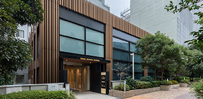

【個室レンタルオフィス】
オープンオフィス赤坂ビジネスプレイス
グローバルなビジネスエリア:赤坂にハイグレードオフィス
グローバル企業に注目のオフィスエリア「赤坂・六本木」は地下鉄各線に隣接した交通利便性の高いビジネススポットです。来客へのイメージ性を重視したハイグレードビルはそのデザイン性とスペースの余裕感が魅力です。 清潔感のあるクリアホワイトで統一されたオフィスフロア内は女性にも人気のレンタルオフィスです。
オープンオフィス赤坂ビジネスプレイスが提供するオフィスサービス
-
 高速インターネット＜光ファイバー＞
高速インターネット＜光ファイバー＞
- 100Mbpsの光ファイバーによるブロードバンド環境をご用意しました。各部屋に配線済みですので、パソコンに繋げばすぐLAN経由で高速インターネットを利用出来ます。
-
 ネットワーク・カラーレーザープリンタ+スキャナー
ネットワーク・カラーレーザープリンタ+スキャナー
- ネットワークを利用して、各お部屋のパソコンから印刷できます。プリンタをご用意いただく必要もございません。
スキャナー機能も搭載しております。
-
 カラーレーザーコピー
カラーレーザーコピー
- フロア内にご用意してあります。カード方式でコピーが出来ますので、小銭の準備が不要です。
-
 シュレッダー
シュレッダー
- 機密情報の破棄にご利用いただけます。
-
 ICカードキーによる入室管理
ICカードキーによる入室管理
- 専用ICカードを使ったホテル式のスマートシステムを用いて、セキュリティーを向上させています。
-
 宅配ロッカー
宅配ロッカー
- 24時間、荷物の受け取りが可能な宅配ロッカーを採用しています。
-
 ミーティングルーム（会議室）
ミーティングルーム（会議室）
- 商談・会議にご利用いただける共有スペースをご用意しています。インターネットで簡単に予約をしていただけます。
-
 自動販売機
自動販売機
- ちょっとした休憩や、お客様のおもてなしにもどうぞ。
-
 無線LAN（WiFi）
無線LAN（WiFi）
- 共有スペースとミーティングスペースにて、無線LAN(WiFi)サービスをご利用いただけます。
-
 快適フリースペース ※Luxury Lounge
快適フリースペース ※Luxury Lounge
- ショートミーティングをしたい時、ちょっと気分を変えて仕事したい時、「使える」快適なフリースペースです。

オープンオフィス赤坂ビジネスプレイスの特徴

イメージを重視したハイグレードビルのデザイン性には誰もが惹かれることでしょう。ビルを入った１階部分のエントランスは吹き抜けのゴージャスさに圧巻です。
このビルの最上階７Ｆにオフィスを構えているというだけでも、対外的な信頼感はグッと高まります。
リニューアルにより、登場した広いオープンスペースにはカフェテーブルがあり、来客対応性に優れています。
またフリーのワークブースやLANジャックも配備したカウンタースペースも魅力的です。
オフィス周辺のMap
オープンオフィス赤坂ビジネスプレイス近隣のスポット
- ■レストラン
- NET SQUAR（カフェ）
- ■商業施設
- 赤坂Sacas
デイリーヤマザキ赤坂2丁目店
オープンオフィス赤坂ビジネスプレイスの住所・アクセス
- 東京都港区赤坂2-14-5 Daiwa赤坂 7F
- 地下鉄 千代田線「赤坂駅」 出口2番から徒歩2分
地下鉄 銀座線、南北線「溜池山王駅」 出口10番から徒歩5分
地下鉄 銀座線、丸の内線「赤坂見附駅」 出口Aから徒歩5分
オープンオフィス赤坂ビジネスプレイスのフロアマップ
7F

※フロア内は禁煙です。
※こちらはイメージ図となりますので、状況が異なる場合は現況を優先させていただきます。
- ◆初回納入金
- 利用料1ヶ月分の保証金
- ◆共益費
- 水道光熱費、ビル共益費、ゴミ出し、フロア・トイレの清掃、共有部分の消耗品代を含みます。